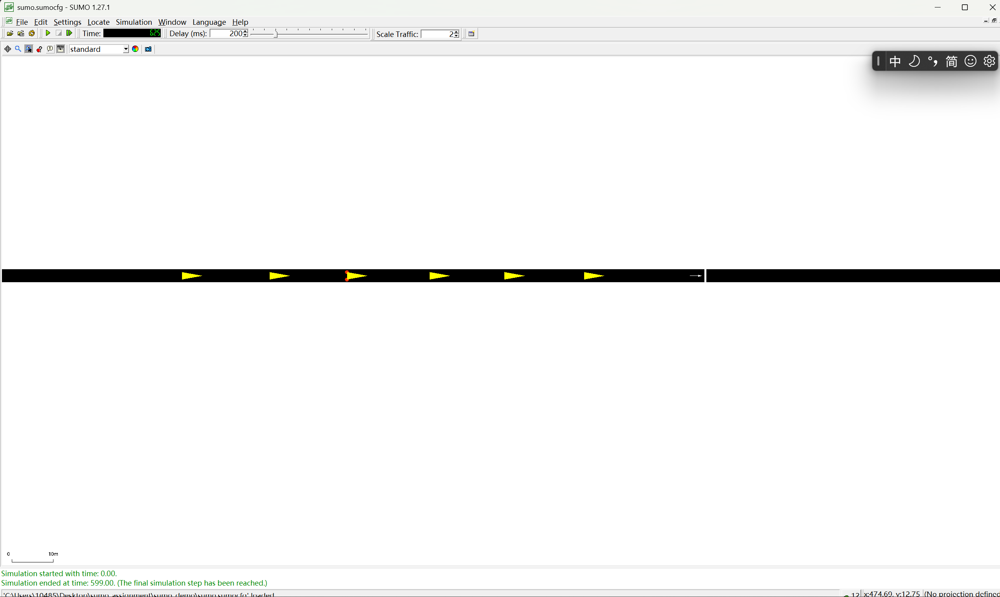
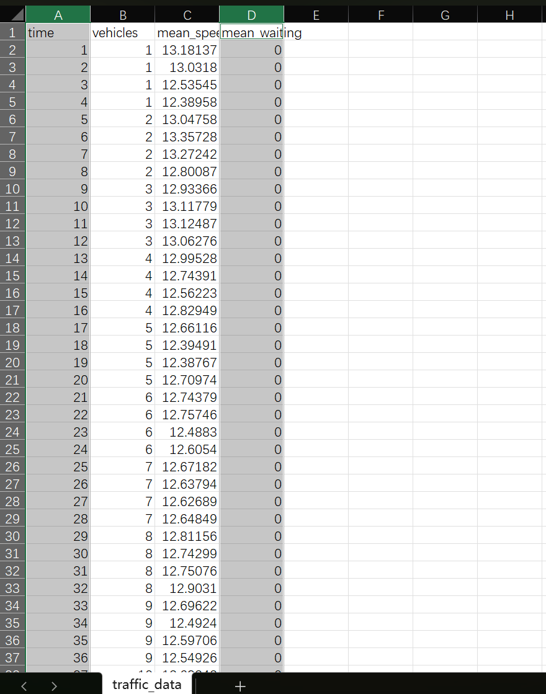
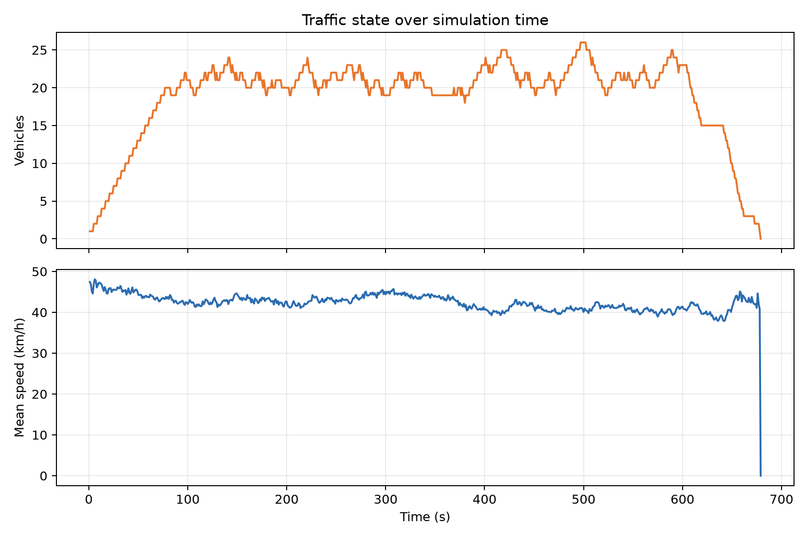
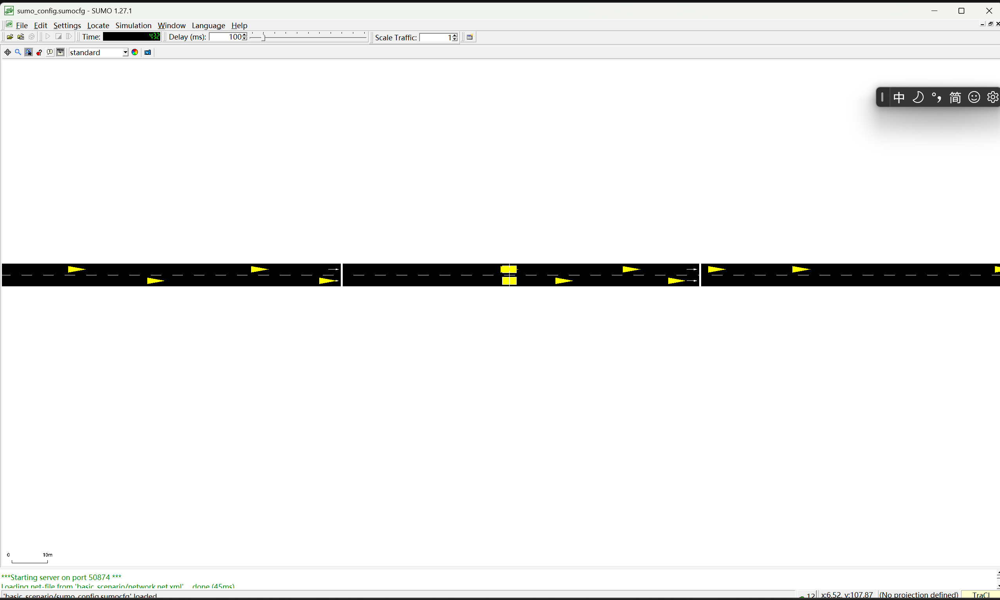
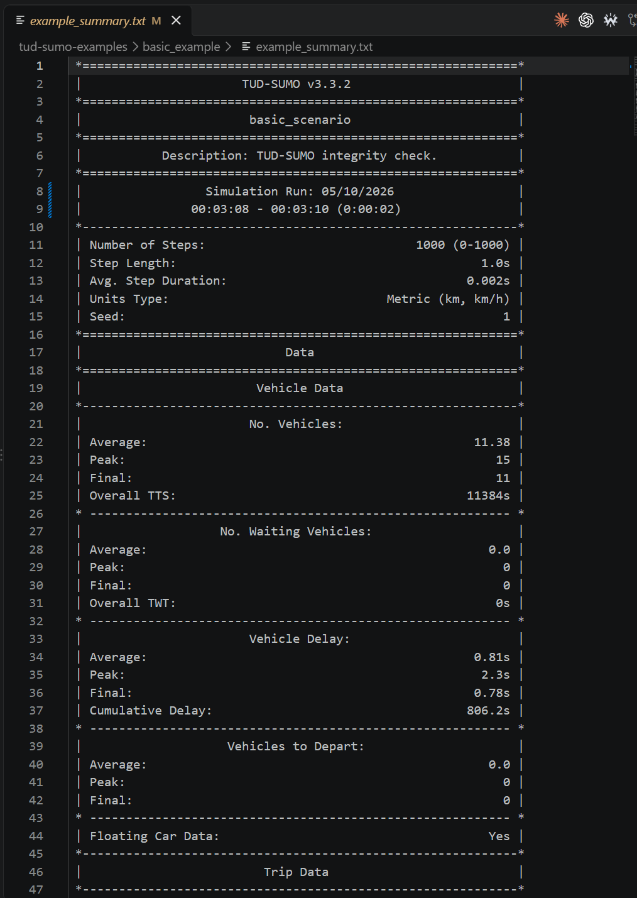

SUMO（Simulation of Urban MObility）是一个开源的微观交通仿真平台。与只描述平均流量和密度的宏观模型不同，SUMO 对车辆、行人、自行车和公共交通参与者进行个体化建模，能够逐时间步更新车辆的位置、速度、加速度、跟驰关系和换道行为。因此，它可以用于分析城市道路和高速公路上的交通流运行、拥堵形成与消散、车辆旅行时间、等待时间和道路通行能力。
SUMO 还可以用于测试交通信号控制、可变限速、匝道控制和动态路径诱导等交通管理策略。通过配置车辆排放模型，还能估计 CO、CO₂、NOx、颗粒物和燃油消耗。它支持行人、公交和铁路等多种交通方式，并可以通过 TraCI 与 Python 或其他仿真器进行在线耦合，所以适合交通规划、交通控制算法验证、车路协同和交通事件分析。
一个完整的交通仿真系统至少包含以下部分。第一是道路网络模型，用节点、道路、车道和交叉口描述道路的几何结构、限速和通行优先权。第二是交通需求模型，规定车辆或行人的出发时间、起点、终点、交通方式和路线。第三是交通基础设施模型，包括交通信号灯、检测器、公交站、停车区和人行横道等。第四是交通行为模型，用于描述车辆跟驰、加速减速、换道和路线选择。
在此基础上，还需要仿真执行引擎按照离散时间步更新所有交通参与者的状态，需要控制接口实现外部程序对仿真的读取和修改，并需要数据输出与评价模块保存车辆轨迹、流量、速度、旅行时间、等待时间、排放等结果。SUMO 的网络文件、路线文件、配置文件、仿真引擎、TraCI 接口和输出文件共同构成了一个可运行的交通仿真系统。
SUMO 本身功能丰富，但直接使用 TraCI 时，研究者需要手动启动仿真、逐步推进时间、查询车辆和检测器、统计数据、处理交通事件并保存结果。对于多个检测器、多个控制器和长时间实验，这些仿真管理代码会占用大量精力，也容易导致不同实验之间的数据处理方式不一致。
TUD-SUMO 是建立在 SUMO 和 TraCI 之上的面向科研的 Python 封装。它保留 TraCI 的动态控制能力，同时提供统一的仿真启动和结束接口、自动数据采集、道路和交叉口跟踪、事件管理、交通控制器接口、标准化数据保存和可视化工具。这样，用户可以用较少的代码完成相同的仿真管理工作，把重点放在信号控制、匝道控制或其他交通策略上。
TUD-SUMO 并不是新的交通仿真引擎，也不会自动替用户决定控制策略；它主要是降低 SUMO 的使用门槛并提高实验的可重复性。论文的对比实验表明，TUD-SUMO 在复杂任务中可以明显减少代码量和程序复杂度，但会增加一定的运行时间和计算开销，这是用计算资源换取开发便利性的结果。
本次复现实验在 Windows 环境下完成。使用 Eclipse SUMO 1.27.1、Python 3.13、TraCI 1.27.1、sumolib 1.27.1 和 TUD-SUMO 3.3.2。基础场景由三个节点和两条单车道道路组成，车辆从起点经过中间节点驶向终点。仿真时间为 600 s，时间步长为 1 s，车辆流量为 900 veh/h。
首先使用 SUMO-GUI 加载配置文件，检查道路网络、车辆路线和车辆运行情况。下图中道路为黑色，黄色图形为车辆；底部日志显示仿真从 0 s 开始并在 599 s 到达最终仿真步，说明基础交通仿真已经完整运行。

通过 TraCI 读取每个时间步的车辆数量、平均速度和平均等待时间，并将结果保存为 traffic_data.csv。Excel 中可以直接查看这些字段，说明仿真不仅能够显示车辆运动，还能够输出可用于定量分析的交通运行数据。


从数据可以看出，车辆数量在仿真开始阶段逐渐增加，随后在约 19～26 辆之间波动，并在仿真结束阶段下降。平均等待时间为 0，说明该基础场景中没有形成明显停车排队；这与道路结构简单、交通需求相对较低的设置一致。
下图显示 TUD-SUMO 启动了 SUMO 服务，并通过 TraCI 端口建立 Python 程序与 SUMO 之间的通信。道路上车辆正在运行，底部日志出现 TraCI 连接信息，证明外部 Python 程序已经能够控制并推进 SUMO 仿真。

TUD-SUMO basic example 运行完成后生成了 example_summary.txt。摘要显示程序完成 1000 个仿真步，并自动统计车辆、等待车辆、车辆延误和旅行数据。

| 指标 | 结果 |
|---|---|
| 仿真步数 | 1000 |
| 平均车辆数 | 11.38 |
| 车辆数峰值 | 15 |
| 平均等待车辆数 | 0 |
| 累计车辆延误 | 806.2 s |
| 完成行程数 | 489（97.8%） |
| 未完成行程数 | 11（2.2%） |
在基础场景上选择道路最高限速作为调控参数。方案 A 将两条道路的限速设置为 13.9 m/s，约为 50 km/h；方案 B 将限速设置为 8.3 m/s，约为 30 km/h。两个方案保持道路结构、车辆流量、仿真时长和随机种子相同，只改变道路限速，以便比较限速变化本身的影响。
| 方案 | 道路限速 | 流量 | 仿真时长 | 随机种子 |
|---|---|---|---|---|
| A：调整前 | 13.9 m/s（约50 km/h） | 900 veh/h | 600 s | 42 |
| B：调整后 | 8.3 m/s（约30 km/h） | 900 veh/h | 600 s | 42 |
下表根据两次运行生成的 tripinfo_A.xml 和 tripinfo_B.xml 统计。平均旅行时间、平均等待时间、平均时间损失和平均行驶距离均针对已经完成的车辆计算。
| 指标 | 方案A：50 km/h | 方案B：30 km/h | 变化 |
|---|---|---|---|
| 已完成车辆数 | 127 | 109 | 减少18辆 |
| 平均旅行时间 | 84.976 s | 153.128 s | 增加80.2% |
| 平均等待时间 | 0 s | 0 s | 无变化 |
| 平均时间损失 | 9.303 s | 31.717 s | 增加约241.0% |
| 平均行驶距离 | 995 m | 995 m | 无变化 |
降低道路最高限速后，车辆完成相同路段所需的平均旅行时间由 84.976 s 增加到 153.128 s，平均时间损失也由 9.303 s 增加到 31.717 s；在 600 s 仿真窗口内完成的车辆数量由 127 辆下降到 109 辆。这说明在当前道路和交通需求下，降低限速会降低车辆通过道路的效率。
两个方案的平均等待时间均为 0 s，说明本场景没有形成需要停车等待的明显排队。这里的“旅行时间增加”主要来自车辆以较低速度连续行驶，而不是信号灯或拥堵造成的停车。因此，实验结果同时说明了交通指标之间的区别：等待时间为 0 并不意味着限速没有影响，旅行时间和时间损失仍然能够反映运行效率的变化。
本实验完成了 SUMO 基础交通场景的构建和运行，使用 TraCI 获取了车辆数量、平均速度和平均等待时间，并通过 TUD-SUMO basic example 验证了自动推进仿真和数据统计功能。复现实验表明，SUMO 可以对道路交通和车辆运行状态进行可视化与定量分析，TUD-SUMO 则通过封装 TraCI 简化了仿真管理和数据保存。
交通调控实验将道路限速从约 50 km/h 降低到约 30 km/h。结果显示平均旅行时间和时间损失明显增加，600 s 内完成的车辆数减少，而平均等待时间仍为 0。由此可见，在该基础场景中，限速参数主要影响车辆连续行驶效率，还没有引起明显排队。
[1] P. Alvarez Lopez et al., “Microscopic Traffic Simulation using SUMO,” 2018 21st International Conference on Intelligent Transportation Systems, 2018.
[2] C. Evans, M. Rinaldi, H. Taale, and S. P. Hoogendoorn, “TUD-SUMO: A research-oriented SUMO wrapper for traffic simulation in Python,” SoftwareX, vol. 34, 2026, 102745.